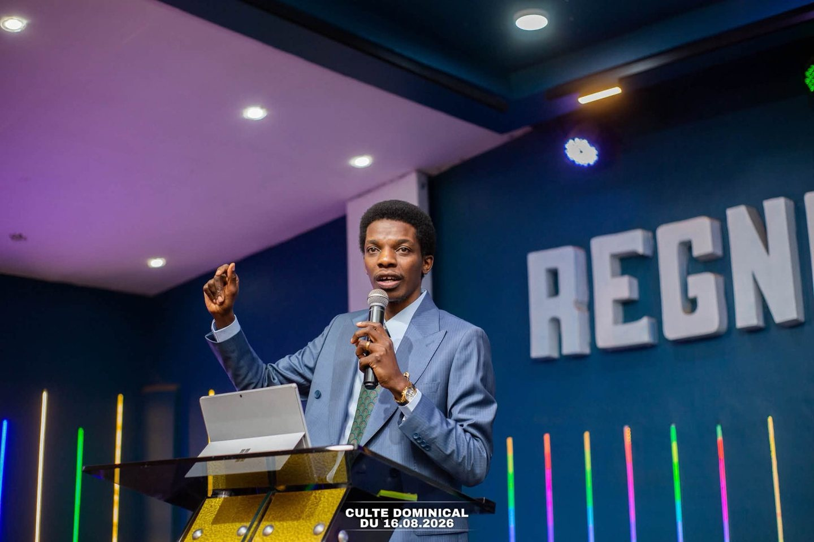

Chaque mardi
Culte d’enseignement & prière
De 17 h à 19 h 20 : un temps de Parole, d’enseignement et de prière. Kolwezi, avenue Sendwe/3Z — derrière Kin Marché Arcadia. Confirmez l’horaire auprès de l’église avant de vous déplacer.